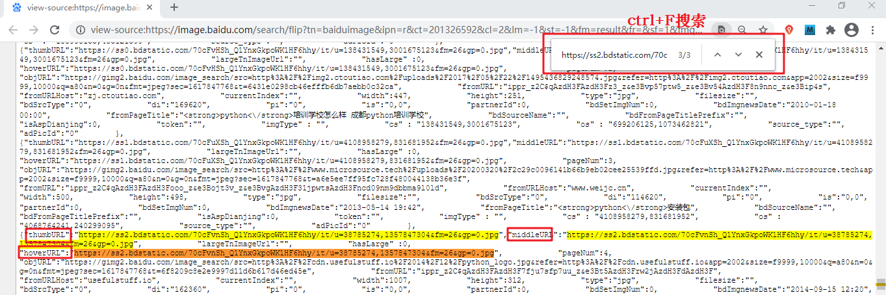
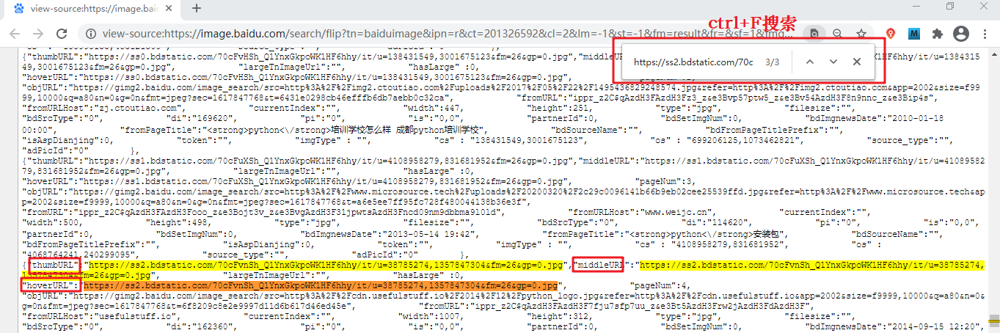

Python爬虫抓取网络照片
本节编写一个快速下载照片的程序，通过百度图片下载您想要的前 60 张图片，并将其保存至相应的目录。本节实战案例是上一节《Python Request库安装和使用》图片下载案例的延伸。

使用上述方式依次检查几张图片，您会发现每张图片源地址，有如下三种匹配结果：

图2：程序执行图
目录文件下载图如下所示：

图3：程序执行结果
分析url规律
打开百度图片翻页版（点击访问），该翻页版网址要妥善保留。其 url 规律如下：第一页：https://image.baidu.com/search/flip?tn=baiduimage&word=python&pn=0 第二页：https://image.baidu.com/search/flip?tn=baiduimage&word=python&pn=20 第三页：https://image.baidu.com/search/flip?tn=baiduimage&word=python&pn=40 第n页：https://image.baidu.com/search/flip?tn=baiduimage&word=python&pn=20*（n-1)百度为了限制爬虫，将原来的翻页版变为了“瀑布流”浏览形式，也就是通过滚动滑轮自动加载图片，此种方式在一定程度上限制了爬虫程序。
写正则表达式
通过上一节可以得知每一张图片有一个源地址如下所示：data-imgurl="图片源地址"复制图片源地址，并检查网页源代码，使用 Ctrl+F 搜索该地址，如下图所示：

图1：检查网页结构（点击看高清图）
使用上述方式依次检查几张图片，您会发现每张图片源地址，有如下三种匹配结果：
"thumbURL":"https://ss2.bdstatic.com/70cFvnSh_Q1YnxGkpoWK1HF6hhy/it/u=38785274,1357847304&fm=26&gp=0.jpg" "middleURL":"https://ss2.bdstatic.com/70cFvnSh_Q1YnxGkpoWK1HF6hhy/it/u=38785274,1357847304&fm=26&gp=0.jpg" "hoverURL":"https://ss2.bdstatic.com/70cFvnSh_Q1YnxGkpoWK1HF6hhy/it/u=38785274,1357847304&fm=26&gp=0.jpg"任选其一，写出图片源地址正则表达式，如下所示：
re_bds='"hoverURL":"(.*?)"'
编写程序代码
下面使用 Requests 库的相应方法和属性编写程序代码，最终实现一个快速下载照片的小程序。
# -*- coding:utf8 -*-
import requests
import re
from urllib import parse
import os
class BaiduImageSpider(object):
def __init__(self):
self.url = 'https://image.baidu.com/search/flip?tn=baiduimage&word={}'
self.headers = {'User-Agent':'Mozilla/4.0'}
# 获取图片
def get_image(self,url,word):
#使用 requests模块得到响应对象
res= requests.get(url,headers=self.headers)
# 更改编码格式
res.encoding="utf-8"
# 得到html网页
html=res.text
print(html)
#正则解析
pattern = re.compile('"hoverURL":"(.*?)"',re.S)
img_link_list = pattern.findall(html)
#存储图片的url链接
print(img_link_list)
# 创建目录，用于保存图片
directory = 'C:/Users/Administrator/Desktop/image/{}/'.format(word)
# 如果目录不存在则创建，此方法常用
if not os.path.exists(directory):
os.makedirs(directory)
#添加计数
i = 1
for img_link in img_link_list:
filename = '{}{}_{}.jpg'.format(directory, word, i)
self.save_image(img_link,filename)
i += 1
#下载图片
def save_image(self,img_link,filename):
html = requests.get(url=img_link,headers=self.headers).content
with open(filename,'wb') as f:
f.write(html)
print(filename,'下载成功')
# 入口函数
def run(self):
word = input("您想要谁的照片？")
word_parse = parse.quote(word)
url = self.url.format(word_parse)
self.get_image(url,word)
if __name__ == '__main__':
spider = BaiduImageSpider()
spider.run()
程序执行结果如下图：图2：程序执行图
目录文件下载图如下所示：
图3：程序执行结果
关注公众号「站长严长生」，在手机上阅读所有教程，随时随地都能学习。内含一款搜索神器，免费下载全网书籍和视频。

微信扫码关注公众号